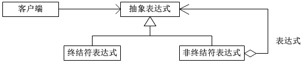
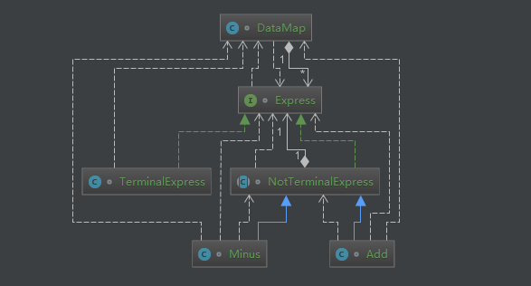

原文出处:本文由博客园博主知了一笑提供。
原文连接:https://www.cnblogs.com/cicada-smile/p/11695393.html
原文连接:https://www.cnblogs.com/cicada-smile/p/11695393.html
本文源码：GitHub·点这里 || GitEE·点这里
一、解释器模式
1、基础概念
解释器模式是对象的行为模式。给定一个语言之后，解释器模式可以定义出其文法的一种表示，并同时提供一个解释器。客户端可以使用这个解释器来解释这个语言中的表达式。
2、模式图解

3、核心角色
(1)、抽象表达式
Express：声明具体表达式角色需要实现的抽象接口，该接口主要提供一个interpret()方法，称做解释操作。
(2)、终结符表达式
TerminalExpress：实现抽象表达式角色接口，主要是一个interpret()方法；每个终结符都有一个具体终结表达式与之相对应。比如解析c=a+b，a和b是终结符，解析a和b的解释器就是终结符表达式。
(3)、非终结符表达式
NotTerminalExpress：每一条规则都需要一个具体的非终结符表达式用来衔接，一般是指运算符或者逻辑判断，比如c=a+b，“+"就是非终结符，解析“+”的解释器就是一个非终结符表达式。
(4)、环境容器
DataMap：一般是用来存放各个终结符所对应的具体值，比如c=a+b转换为c=1+2。这些信息需要一个存放环境。
4、源代码实现
- 类图结构

- 源码实现
public class C01_InScene {
public static void main(String[] args) {
DataMap dataMap = new DataMap();
TerminalExpress terminalExpress1 = new TerminalExpress("num1");
TerminalExpress terminalExpress2 = new TerminalExpress("num2");
TerminalExpress terminalExpress3 = new TerminalExpress("num3");
dataMap.putData(terminalExpress1, 1);
dataMap.putData(terminalExpress2, 2);
dataMap.putData(terminalExpress3, 3);
// 1+2-3 = 0
System.out.println(new Minus(
new Add(terminalExpress1,terminalExpress2), terminalExpress3)
.interpret(dataMap));
}
}
// 解释器接口
interface Express {
Integer interpret(DataMap dataMap) ;
}
// 非终结符表达式
abstract class NotTerminalExpress implements Express {
Express express1,express2;
public NotTerminalExpress(Express express1, Express express2){
this.express1 = express1;
this.express2 = express2;
}
}
// 终结符表达式: 1+2 终结符： 1 和 2
class TerminalExpress implements Express {
public String field ;
public TerminalExpress (String field){
this.field = field ;
}
@Override
public Integer interpret(DataMap dataMap) {
return dataMap.getData(this);
}
}
// 加法表达式
class Add extends NotTerminalExpress {
public Add (Express e1, Express e2) {
super(e1, e2);
}
// 将两个表达式相减
@Override
public Integer interpret(DataMap context) {
return this.express1.interpret(context) + this.express2.interpret(context);
}
}
// 减法表达式
class Minus extends NotTerminalExpress {
public Minus (Express e1, Express e2) {
super(e1, e2);
}
// 将两个表达式相减
@Override
public Integer interpret(DataMap context) {
return this.express1.interpret(context) - this.express2.interpret(context);
}
}
// 数据容器
class DataMap {
private Map<Express,Integer> dataMap = new HashMap<>() ;
public void putData (Express key,Integer value){
dataMap.put(key,value) ;
}
public Integer getData (Express key){
return dataMap.get(key) ;
}
}二、Spring框架应用
1、源码案例
import org.springframework.expression.Expression;
import org.springframework.expression.spel.standard.SpelExpressionParser;
public class SpringTest {
public static void main(String[] args) {
SpelExpressionParser parser = new SpelExpressionParser () ;
Expression expression = parser.parseExpression("(1+3-2)*3") ;
Integer result = (Integer)expression.getValue() ;
System.out.println("result="+result);
}
}2、代码分析
(1)Expression结构
表达式接口：具有不同的实现类。
interface Expression
class CompositeStringExpression implements Expression
class LiteralExpression implements Expression
class SpelExpression implements Expression核心方法：
Object getValue() throws EvaluationException;(2)SpelExpressionParser结构
SpelExpressionParser extends TemplateAwareExpressionParser
TemplateAwareExpressionParser implements ExpressionParser
interface ExpressionParser(3)ExpressionParser接口
public interface ExpressionParser {
Expression parseExpression(String var1) ;
Expression parseExpression(String var1, ParserContext var2) ;
}(4)Expression获取
根据不同的条件获取不同的Expression对象。这里产生类的依赖关系。
源码位置：TemplateAwareExpressionParser
public Expression parseExpression(String expressionString,
ParserContext context)
throws ParseException {
if (context == null) {
context = NON_TEMPLATE_PARSER_CONTEXT;
}
return context.isTemplate() ?
this.parseTemplate(expressionString, context) :
this.doParseExpression(expressionString, context);
}三、模式总结
- 场景
编译器、运算符表达式、正则表达式、机器人等。
- 优点
当有一个表达式或者语言需要解释执行，该场景下的内容可以考虑使用解释器模式，使程序具有良好的扩展性。
- 缺点
解释器模式会引起类膨胀，会导致程序执行和调试非常复杂，不容易理解。
四、源代码地址
GitHub·地址
https://github.com/cicadasmile/model-arithmetic-parent
GitEE·地址
https://gitee.com/cicadasmile/model-arithmetic-parent：解释器模式2.png)